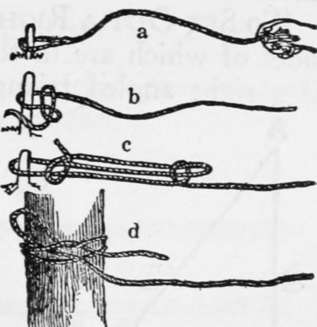
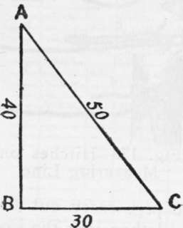
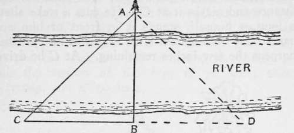
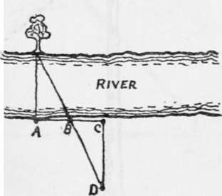
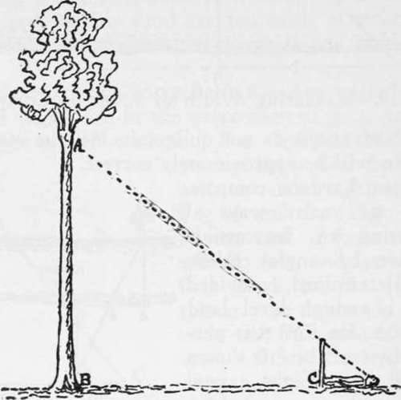
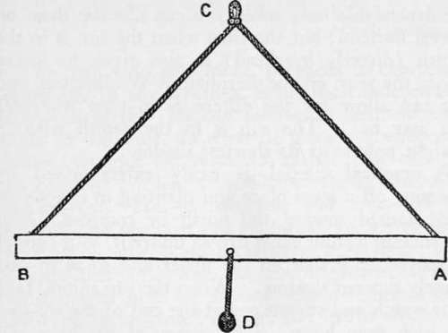

Extemporary Measurements
Description
This section is from the book "Camping And Woodcraft", by Horace Kephart. Also available from Amazon: Camping and Woodcraft.
Extemporary Measurements
A 3-foot pocket steel tape weighs only a couple of ounces and takes up no more room than a watch. It is a good thing for a woodsman to carry, as he often has occasion to take measurements. Where the tape is inconvenient to use, he can measure with it a certain length on a straight pole, or on a fish line. Lacking this, he should have a measure scored on his pencil, hatchet handle (if straight), inside of waist belt, or some other article of equipment that he constantly carries.
He should also know some of the measurements of his body. The first joint of the Pltle finger, for instance, may be one inch, or the thumb an inch wide. Clench both fists, making the extended thumbs meet: this may bt just one foot. Measure the span of thumb and little finger and the height of your eye from the ground. The full stretch of the extended arms is often used, but is unreliable on curved surfaces, as in measuring the girth of a tree, since it will be several inches shorter than if one stood with his back to a flat wall and stretched his arms horizontally.
To measure successive lengths with a stout cord, such as a fishing line: Knot the line two or three feet from one end, measure off, say, 100 feet from this, and knot again, leaving a stray end beyond the second knot. One end could be looped, as in Fig. 170, in which case you stick a smooth peg in the ground, put the loop over the peg, carry out the hundred feet, set a peg there, and then jerk the line upward, which, if the ground is smooth, will cause a wave to run along it that will lift the loop off the first peg. But a permanent loop is too likely to catch in bushes, etc.: so it is better to leave plain ends as I have described, and make your loop each time with a hitch (Fig. 17 b) so it may shake out as it comes off the peg, leaving only a free end to be hauled in. A sheepshank (Fig. 17c) may be used for the same purpose.
However, in the woods, it is better to fasten your line with a signal halyard hitch (Fig. 17d) to any convenient small tree or bush that stands fairly in the line you wish to measure. Pass the end of the line twice round the stem or peg, then, taking the end and a small bight of the measuring part, hitch them as if you were going to tie a reef knot, pull the first hitch tight, but do not complete the knot by making the second hitch; this will hold quite fast enough, and a slight jerk will be sufficient to set it free when you wish to haul in the end.
Fig. 17. Hitches on Measuring Line.
A measuring line should merely be straight upon the ground, not drawn taut; still less should it be lifted up and then pulled to a straight line in the air. Cords of any kind are too easily stretched to be trusted for measuring if there is any strain on them.
To Set Out A Right Angle
Any triangle the sides of which are in the proportion of 3, 4, and 5, is a right angled triangle. For example: Measure 40 feet on a line that 3'ou wish to run at right angles, Peg A and B (Fig. 18). Fasten end of tape at A, take 80 feet, and fasten 80-foot mark at B. Then, taking tape in hand, walk aside till BC and AC are taut. BC is then perpendicular to AB, and B is a right angle.
To Measure An Inaccessible Distance
The width of a river, for instance, may be measured with the aid of a pocket compass. Say the river runs east and west, and you are on the south side. Choose a tree {A, Fig. 19), or other well defined mark on the opposite shore, and bring it to bear due north of you. Mark your position with a peg at B; turn to one side, say the left, and walk westward till A bears exactly northeast, and put a peg there, C; then CB will equal BA, the breadth of the river, because CB and BA subtend an angle of 900, or a right angle, and must therefore be of equal length.
Fig. 18. To Lay Out a Right Angle.
Since your readings on a small compass may not be quite true, check them, if the ground permits, by walking east till A bears northwest from D. If the two observations do not quite coincide, the mean of the two will be approximately correct.
Fig. 19. Measuring Width of River by Compass.
If you have no compass, there are many ways of measuring an inaccessible distance by angles otherwise determined, provided there is enough level land on your side for the purpose. One of these is shown in Fig. 20. Sight a conspicuous object, as before. Plant a stake about 5 feet high at A, as nearly opposite and "square" as you can judge. Set up another stake at B} as nearly at a right angle as you can, and at about one-half the estimated distance to your mark. Continue AB straight to C and plant another stake. AB must equal BC. Now set a stake at D, at right angle to base, wherever the line DB continued will strike the object across the river that you have been sighting at. Then DC equals the width across.
To Measure An Inaccessible Height Or Utipth
Suppose vou wish to measure the height of a cliff, a tree, or other object the base of which you can reach, and with fairly level ground in front of it. In Fig. 21, the man wants to know the length of the merchantable "stick" below the tree branches. He estimates the height by eye, then paces off that distance and marks it at C. He cuts a stake about as long as himself, stands it in front of him and marks on it with his knife the height of his eye, then sharpens the few inches remaining. At C he drives the stake perpendicular, with the knife mark level with the ground. Then he lies down with feet against the stake, as shown, and sights at the tree. If the line of sight over the top of stake does not strike the point A, he shifts, and tries again, until the alignment is correct. The height AB then equals the distance BC.
Fig. 20. Measuring Width without Compass.
Fig. 21. Measuring a Height.
Some backwoodsmen have a rough-and-ready way of estimating the height of a tree. They walk off until its topmost branches or first fork can be viewed by looking backwards between, the outstretched legs, with practice this method may become pretty accurate.
On level open country a height can be measured by shadow. Set up vertically a stick of known length; measure the length of its shadow, and that of the object whose height is required. As the length of stick's shadow is to stick's length, so is thai of the object's shadow to the object's height. For example: the stick is 5 feet long and its shadow 7, while the shadow of the tree is 70 feet; then 7:5::7o:x, and x—50 feet.
Fig. 22. Extemporized Level.
To measure a depth with the watch: square the number of seconds a stone takes to reach the bottom, and multiply by 16: the result is the depth in feet.
Leveling
Take a short straight stick or ruler, AB in Fig. 22, mark it exactly in the middle, and suspend it with a string with loop at C directly over the middle of the stick, from which latter a little weight D is suspended to keep the wind from shaking the level. To use the instrument: hold it from C above your head so that top of stick is in line with your eye, and sight along the surface, noting at what point of the ground the line of sight corresponds.
Going there, you have ascended a distance equal to the height of your eye from the ground. Many ap-plications of this method will suggest themselves.
I do not give more elaborate processes of measur* ing and leveling, because the simple ones here described are accurate enough for a woodsman's purposes, and they take little time or trouble.
Time
A leaf of an almanac for the month you are out is useful in case your watch runs down. The Wodd A Imanac shows the time of rising and setting of sun and moon for four different zones from the Atlantic to the Pacific. These, of course, are dependable only when you can observe them on a level horizon; but the time when the sun is in the zenith (directly overhead) is also given for every day in the year, on the meridian of Washington, and you can allow for the difference in time wherever you may be. The sun is in the zenith when a straight pole casts its shortest shadow.
A practical sundial is easily extemporized by sweeping off a level place and planting in it a 5-foot stick slanted toward the north by compass. Nail the stick to a stout stake driven under it, so it cannot be moved, and sharpen the upper end so as to cast a finely tapered shadow. When the sun shines, take your watch and stick a peg at the end of the shadow for each even hour. Subdivisions of the hour can be marked by shorter pegs. In a fixed camp such a sundial is handy near the cook's fire. Often I have boiled my three-minute eggs by one. If the pegs are altered every week they will indicate near enough actual sun time for practical purposes.
Continue to:
- prev: Mapping
- Table of Contents
- next: Chapter VII. Trips Afoot